Enemy
Here is a list of most or all of the enemies in Zelda64 (I'm not sure) and how to kill them.
A-B-C-D-E-F-
G-H-I-J-K-L-M-N-
O-P-Q-R-S-T-
U-V-W-X-Y-Z
A
Anubis- This is a weird guy that floats. Use only Fire Arrows or Din's Fire. They are
in the Spirit Temple.
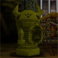Armos- Living statues. These guys succomb to bombs and sword
slices when not moving. Get them to return to their spot and give it to em'.
B
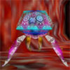Bari- Big jellyfish that fall from the ceiling when you walk under them.
They'll spin around and hurt you. Use the boomerang or get zapped.
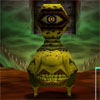Beamos- These guys don't move but thier head spins around and the one eye
will shoot a laser at you. You can block the laser if you have the Mirror Sheild. To kill,
throw bombs at it.
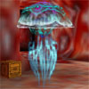Biri- These are smaller jellyfish floating around in Jabu-Jabu's Belly.
You have to use the boomerang on them or they will zap you.
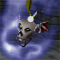Bubble (blue)- This guy is a flaming, flying, skull. Use your sheild and
when he hits, his fire will go away and then you can cut his head to pieces.
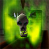Bubble (green)- This is the same as the previous but is twice as weak.
Use the same techniques while fighting blue bubbles.
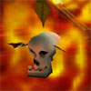Bubble (red)- These are a little different. They live in lava and jump out at you.
You don't have to fight them, just run past them.
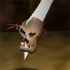Bubble (white)- Use the same techniques as the blue and green bubbles.
C-None
D
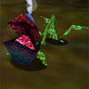Deku Baba- These are like venus fly traps. They will lash out at you
but since they're plants, they can't get far. Just hit its mouth when it strikes
and then hit his stem. You can also wait and hit his head again. They will drop nuts or sticks.
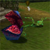Deku Baba (big)- Same as the small ones but 3 times your size. Use the same techniques
as with the little guys.
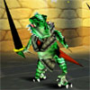Dinoflos- These are only found in Ganon's Castle in the tower and in Gerudo Training Ground. Use Z-targeting and do a jump
-attack when its about to strike. They like to jump around and do a slice on your back.
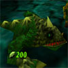Dodongo- These lizards are a pain. You can either throw bombs in his mouth when
he opens it to breath fire or use Z-targeting and slice his tail. If your really lazy, just use your slingshot
and waste your seeds. When they die, they blow up.
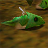Dodongo Larvae- These little critters pop out of the ground and
charge at you. Just show him your sword and what it can do and he'll be off to hell. These
guys blow up when they die, too.
E-None
F
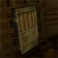Fake Door- These doors diguise themselves as real doors and when you try
to open them, they wobble around and fall on you. You always know a fake door because
it sticks out of the wall a bit. Just put a bomb in front of them.
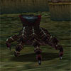Floor Master- These nasty little sons of bitches are a pain.
Some of these guys will split into 3 small hands that you have to kill right away or they
become a big one again. Some are also invisible and you must use the lens of truth. Just slice them.
Freezzard- Thes are big statues that blow ice and freeze you. You have to slice them three times in a row or
they rebuild themselves.
G
Gerudo Guard- The chicks in the fortress when you're saving the carpenters. Use the same techniques
as when your fighting Lizalflos, Dinolfos, Wolfos, and Stalfos.
Gibdo- These are like Redead except they're mummies. Just slice them or freeze them with Sun Song.
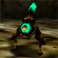Gohma Larva- These guys are in the room before Gohma and in Gohma herself.
They try to jump at you, just hit them twice with a Kokiri sword. You can also kill them before they hatch.
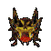Gold Skulltula. You gat tokens for killing them and you exchange tokens for good
stuff. They don't really have an attack. You just hit them and grab your token.
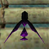Guay- These birds appear at lake Hylia and the Desert Colossus and other spots.
They swoop down like Keese and you slice them.
H-None
I-None
J-None
K
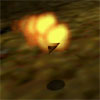Keese of Fire and Ice- These are bats that swoop at you. Just slice them.
When the Fire ones hit you you burn. When the Ice ones hit you, you freeze. Simple.
L
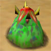Leever- These guys are annoying. They pop out in groups of like 6 and charge at you.
If you kill alot at a time, a big blue one comes out.
Like-Like- These guys suck. They swallow you and eat your sheilds and tunics and swords and stuff. I like you use the Hookshot/Longshot
to freeze them and pull you to them and slice, then repeat.
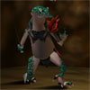Lizalfos- These guys are easier than Dinolfos. Just use the same technique.
M
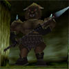Moblin- These guys are mean. If they see you, they will spear you and send ya flying.
You have to wait until they're backs are turned and send a hookshot/longshot into
their backs.
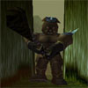Moblin (Club)- This guy gards the Forest Temple and has a
big club. He sends shockwaves at you and hits you with it. Just run past him and he won't turn around.
So just give him a reason to get a band-aid. When he dies, all this fire melts him away and
if you stand in it, its really cool.
N-None
O
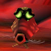Octorok- These guys pop out of water and shoot rocks at you.
Just use your Deku or Hylian sheild to bounce them back and hit them with it.
P
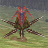Peahat- These large pinnapple-like creatures emerge from the ground and
spin their bug blades at you. 6 deku Seeds will do it or Just run away.
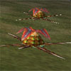Peahat Larva- If you're dumb enough to stay, these larva emerge from the Peahat.
They come in three's and fly over you. Its hard to kill them so just duck with your sheild and wait for them to go away.
Or run.
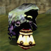Poe- These ghosts are everywhere and disappear alot. Just chop.
Poe (big)- These Poes are in Hyrule Field and run away when they see you. To kill them,
You must hop on Epona and cahse them down with your bow and arrow. If you bring ten Big Poe
spirits back to the ghost hunter in the market, he'll give you a bottle.
Q-None
R
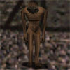ReDead- These guys are everywhere! Just freeze them with your Sun Song
and bring it to them.
S
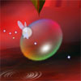Shabom- These are bubbles. Use your boomerang or they'll zap you.
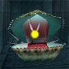Shell Blade- These guys appear under water. When they open their mouth, hookshot/longshot
their muscle.
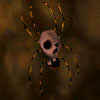Skullwalltula- These are easy spiders. Just slice, or shoot or chuck somethin at em'.
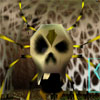Skulltula (big)- These are big skulltulas that spin around. Hit their belly, or hookshot/longshot
them anywhere.
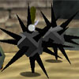Spike Balls- These little critters are in the Water Temple. Hit them with your sheild sword or Hookshot/Longshot,
and they will curl up into a soft ball. Destroy.
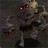Stalchild- These guys pop out of the ground in hyrule field at night, as a child and attack you.
Just slice and dice.
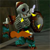Stalfos- The hardest, but the most fun to play with. These skeleton guards use realistic fighting techniques on you.
when you attack at the wrong time, it will block you. Wait til he lets his guard down to slice you and do a Z-targeted jump attack. If you roll under
his jump attack and hit his back, you'll do more damage. Try using bombs or a spin attack. These guys are good practice.
Stinger- These guys live in water and dive bomb you when they jump out. Try to lure them out and then shoot or throw something at it or do a jump attack.
T
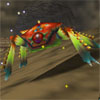Tektite- These guys are around in alot of places. Just use your sword upon them. One shot from a master sword should do it.
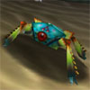Tektite (Blue)- These are usually near water and are twice as strong as the Tektites. Use your sword again.
Tentacle- Found in Jabu-Jabu's Belly, these long tentacles hang from the ceiling and when you approach them, come down to attack you. When this happens, Z-target and throw
ye old boomerang.
Tiles- These tiles come out of the floor and spin into you. Just block them with your sheild and they will explode.
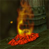Torch Slug- In the fire temple, these punks lunge around. Just hit em' with your sword and
they will lose their fire, then just destroy using your sword.
U-None
V-None
W
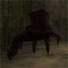Well Master- These guys are one of the most annoying creatures in the game. They hang from the ceiling and if you walk under them, they will fall, slowly and grab
you, if you don't frantically run about doing rolls and flips. If they do get you, you die instantly. When they come down,
just dodge them and when they hit, slice them before they go back up.
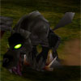Wolfos- These guys are fun to fight. They run around you and try to litterally hit you with their paw.
use Z-targeting techniques and hit right before they do, otherwise they'll block the attack.
Ice Wolfos- Same as previous, but these ones are bigger and white.
X-None
Y-None
Z-None